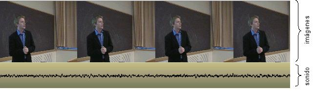

1. El Video Digital
Una idea elemental acerca del vídeo podría ser entenderlo como un conjunto de imágenes en movimiento que tienen sonido. Hasta hace poco, toda la grabación, manipulación y reproducción de vídeo se realizaba de forma analógica pero, con el avance de la tecnología multimedia, es hoy habitual utilizar un ordenador para almacenar, editar y reproducir vídeo digital.

La Edición de Video Digital es la elaboración completa y montaje de secuencias de video utilizando medios informáticos.
Este proceso requiere de varias fases: concebir la idea del proyecto final que deseamos generar, capturar o importar las diferentes secuencias de videos (y sus diferentes formatos de grabación), editar las secuencias utilizando programas de edición de video, establecer el tipo de formato de reproducción y la exportación a un soporte físico.
Este artículo está licenciado bajo Creative Commons Attribution-NonCommercial-ShareAlike 2.5 License
Jo.R.C.A. 2004 - 2010

Edición de Audio y Video con Software Libre by José Ramón Cerdeira Alonso is licensed under a Creative Commons Reconocimiento-No comercial-Compartir bajo la misma licencia 3.0 España License